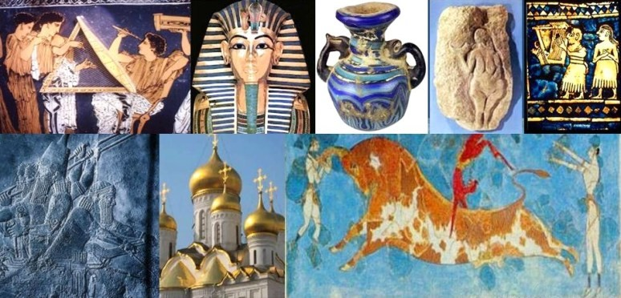

Contacto
tel.222-254796 LP
Profesor: Edgar Zenon Chipana
Cel. 72512345
La Historia del Arte es una disciplina de las ciencias sociales que estudia la evolución del arte a través del tiempo y basa sus estudios en el análisis de las expresiones artísticas del hombre y como este ha representado su visión particular del mundo que lo rodea a través de las distintas técnicas y manifestaciones artísticas en cada uno de los periodos históricos.
La Historia del arte se apoya en otras disciplinas complementarias como la Arqueología, la Antropología, la geología y la Historia entre otras ciencias para corroborar con más acierto los datos que recopila; a partir de los restos mobiliarios e inmobiliarios dejados por el hombre y con los que este representó la necesidad de expresión visual de su entorno e historia; ya fuera con intención decorativa, funcional o también utilizada como propaganda o adoración religiosa, así como llevado también por la necesidad de perpetuar la historia de su civilización dejando la huella de su existencia.
Las obras artísticas no son tales sólo porque el artista diga que lo es después de crearla, o por su concepto personal e individualizado de lo que es o no es una creación artística. Lo es sin embargo cuando otras personas lo reconocen como tal, al apreciarla y reconocer en ella, el talento de aquel que mediante su creación artística produjo en ellos una reacción emocional, una identificación que hace que ellos aprecien el producto de esa creación como algo valioso; sea o no único, o que les guste o no en lo personal.
El arte goza hoy día de una amplia red de estudio, difusión y conservación de todo el legado artístico producido por la humanidad a lo largo de su historia. Durante el siglo XX proliferaron las instituciones, fundaciones, museos y galerías, de ámbito público y privado, dedicados al análisis y catalogación de las obras de arte, así como su exposición a un público mayoritario.
tel.222-254796 LP
http://www.unidadBol/sis.bo
Escuela de Arte La Palma de Madrid